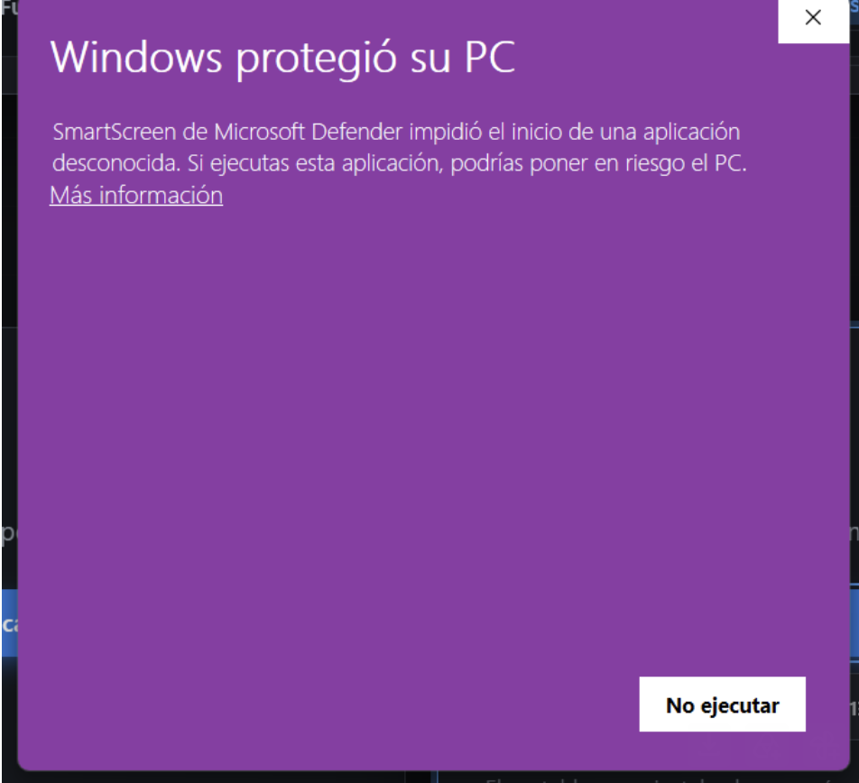
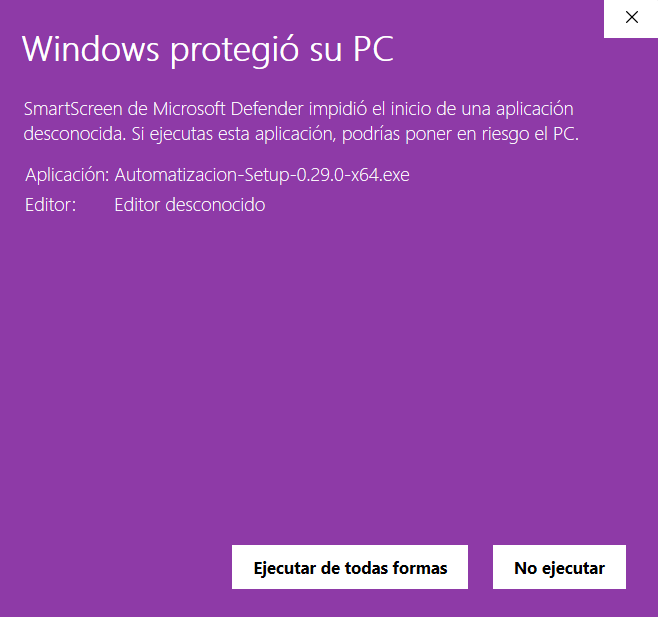
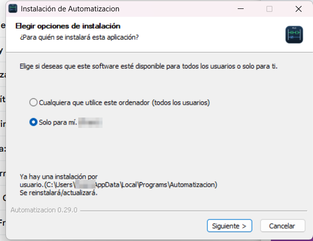
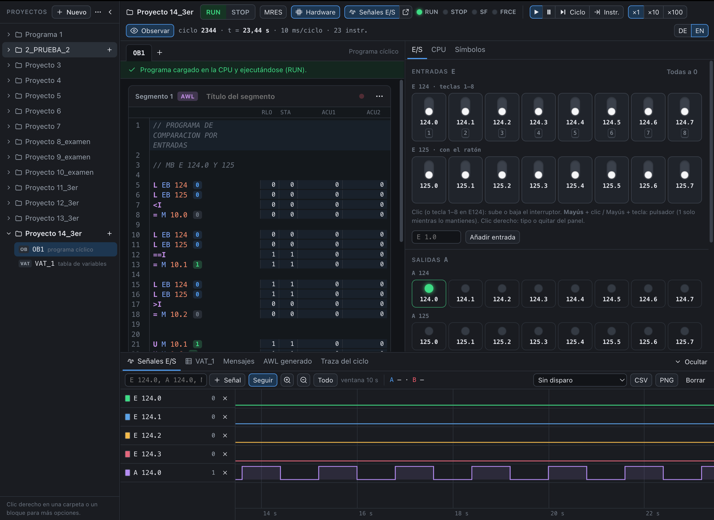

Installation
Automatizacion unter Windows installieren
Den Simulator unter Windows 10 oder 11 zu installieren dauert ein paar Minuten. Diese Anleitung führt dich Schritt für Schritt und mit Screenshots vom Download bis zum ersten Start. Die Screenshots stammen von einem spanischen Windows, und das Installationsprogramm selbst ist auf Spanisch: Neben jeder spanischen Schaltfläche steht, was sie bedeutet.
-
Schritt 1: Das Installationsprogramm herunterladen
Klicke im Download-Bereich auf Installer .exe. Der Browser speichert die Datei in deinem Download-Ordner. Wenn der Download fertig ist, doppelklicke auf
Automatizacion-Setup-….exe, um die Installation zu starten.
-
Schritt 2: Windows zeigt eine Warnung: Das ist normal
Bevor sich das Installationsprogramm öffnet, zeigt Windows den Bildschirm «Der Computer wurde durch Windows geschützt». Er erscheint, weil das Installationsprogramm keine kostenpflichtige digitale Signatur hat: ein Zertifikat, das man jedes Jahr kaufen muss und das dieses kostenlose Projekt nicht hat. Deshalb nennt Windows es eine «unbekannte App» von einem «unbekannten Herausgeber». Das heißt nicht, dass Windows darin etwas Schädliches gefunden hat.

-
Schritt 3: Auf «Weitere Informationen» und «Trotzdem ausführen» klicken
Klicke auf den Link Weitere Informationen unter dem Warntext. Dann erscheinen der Dateiname (
Automatizacion-Setup-….exe) und die Schaltfläche Trotzdem ausführen: Klicke darauf, um das Installationsprogramm zu öffnen. Auf den spanischen Screenshots heißen sie Más información und Ejecutar de todas formas.
-
Schritt 4: Dem Installationsprogramm folgen
Das Installationsprogramm ist auf Spanisch. Übernimm die vorgeschlagenen Optionen: Solo para mí (nur für mich; dafür braucht es keine Administratorrechte), Siguiente (Weiter), den vorgeschlagenen Installationsordner und Instalar (Installieren). Wenn schon eine Version installiert war, steht das unten, und sie wird aktualisiert: Deine Projekte bleiben erhalten.

-
Schritt 5: Wenn es heißt, dass Automatizacion läuft
Diese Meldung («Automatizacion está activa») erscheint nur, wenn die App geöffnet war, zum Beispiel beim Aktualisieren von einer älteren Version. Klicke auf Aceptar (OK): Das Installationsprogramm schließt die App und macht weiter. Wenn sie sich nicht von selbst schließt, schließ sie selbst und klicke noch einmal auf Aceptar.

-
Schritt 6: Fertigstellen und die App öffnen
Lass am Ende das Kästchen Ejecutar Automatizacion (Automatizacion ausführen) aktiviert und klicke auf Terminar (Fertigstellen). Die App öffnet sich im freien Simulator, bereit für dein erstes Programm. Ab jetzt findest du sie im Startmenü und als Verknüpfung auf dem Desktop. Wenn sie in einer anderen Sprache startet, stellst du sie unter Einstellungen ▸ Sprache um.

Andere Wege und Hilfe
- Keine Rechte, um Programme zu installieren (zum Beispiel an einem Schulrechner): Lade die Portable .zip herunter, entpacke sie und öffne
Automatizacion.exe. Sie braucht keine Installation; wenn Windows dieselbe Warnung zeigt, geht es genauso weiter, mit «Weitere Informationen» und «Trotzdem ausführen». - Zum Aktualisieren lädst du das neue Installationsprogramm herunter und wiederholst die Schritte: Es installiert sich über die alte Version und behält deine Projekte. In der App sagt dir das Menü Ayuda ▸ Buscar actualizaciones… (Hilfe ▸ Nach Updates suchen), ob es eine neue gibt.
- Mac oder Linux? Die Anleitung steht in den häufigen Fragen. Wenn etwas nicht funktioniert, melde es auf GitHub.